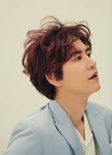

회원가입

Placeholder
규현의 MBTI는?
ESFJ
동정심과 동료애가 많으며, 친절하고 재치가 있다. 다른 사람들에게 관심을 쏟고 인화를 도모하는 일을 중요하게 여긴다. 일상적인 일에 잘 적응하며 현실적이고 실제적이다. 물질적인 소유를 즐기기도 한다.
양심적이고 정리정돈을 잘하며 참을성이 많고 다른 사람들을 잘 돕는다. 또한 다른 사람들의 지지를 받으면 일에 더욱 열중하나 다른 사람들의 무관심한 태도에 민감하다.
이들의 기쁨과 만족의 대부분은 주위 사람들이 감정에서 기인한 온정을 보여주는 것에서 온다. 이들은 다른 사람들의 존경할 만한 자질에 주의를 집중하는 경향이 있어서 존경받는 사람, 널리 알려진 기관이나 연구소, 대의명분에 경의를 나타내며, 그들이 존경, 칭찬하는 것이라면 무엇이든지 대체로 이상적인 것으로 받아들인다.
Placeholder
박명수의 MBTI는?
ESTJ
책임감이 강하고 온정적이며 헌신적이다. 세부적이고 치밀성과 반복을 요하는 일을 끝까지 해 나가는 인내력이 높다. 이들이 가진 침착성과 인내력은 가정이나 집단에 안정성을 가져다준다. 다른 사람의 사정을 고려하며 자신과 타인의 감정 흐름에 민감하다.
일 처리에 있어서 현실감각을 가지고 실제적이고 조직적으로 이행한다. 경험을 통해서 자신이 틀렸다고 인정하기까지 어떠한 난관이 있어도 꾸준히 밀고 나가는 형이다. 많은 양의 사실을 기억하고 이용할 수 있지만, 그 사실이 모두 정확하기를 바라며 모든 것이 명확하게 쓰여진 것을 좋아한다. 위기 상황에 대처할 때에도 차분하며 안정되어 있다.
그들을 잘 알기 전까지는 그들이 어떤 상황에 대처할 때 외면의 차분함 뒤에 심할 정도로 개인적인 감정을 느끼고 있음을 알기가 어렵다.
이 유형의 사람들은 일을 하고 세상일에 대처할 때 행동에 분별력이 있다. 대체로 열심이며 세부적인 사항과 절차에 세심하다. 일을 완성하기 위해서 필요한 세부적이고 사소한 일을 해낼 수 있고 또 그러려고 한다. 이들의 인내력은 연관된 모든 일을 안정시킨다.
Placeholder
이효리의 MBTI는? ESFP
창의력과 통찰력이 뛰어나다. 강한 직관력으로 의미와 진실된 관계를 추구한다. 뛰어난 영감으로 말없이 타인에게 영향력을 미친다.
독창성과 사적인 독립심이 강하고, 확고한 신념과 뚜렷한 원리원칙을 생활 속에 가지고 있으면서 공동의 이익을 가져오는 일에 심혈을 기울이고 인화와 동료애를 중요시하는 경향을 가지고 있어 존경을 받고 사람들이 따른다.
이 유형에는 열정과 신념으로 자신들이 믿는 영감을 구현시켜 나가는 정신적 지도자들이 많다. 남에게 강요하기보다는 행동과 권유로 사람들의 마음을 움직여 따르게 만드는 지도력이 있다.
 Placeholder
Placeholder>
이창섭 ISTJ
ESFJ (사교적인 외교관)
동정심과 동료애가 많으며, 친절하고 재치가 있다. 다른 사람들에게 관심을 쏟고 인화를 도모하는 일을 중요하게 여긴다. 일상적인 일에 잘 적응하며 현실적이고 실제적이다. 물질적인 소유를 즐기기도 한다.
양심적이고 정리정돈을 잘하며 참을성이 많고 다른 사람들을 잘 돕는다. 또한 다른 사람들의 지지를 받으면 일에 더욱 열중하나 다른 사람들의 무관심한 태도에 민감하다.
이들의 기쁨과 만족의 대부분은 주위 사람들이 감정에서 기인한 온정을 보여주는 것에서 온다. 이들은 다른 사람들의 존경할 만한 자질에 주의를 집중하는 경향이 있어서 존경받는 사람, 널리 알려진 기관이나 연구소, 대의명분에 경의를 나타내며, 그들이 존경, 칭찬하는 것이라면 무엇이든지 대체로 이상적인 것으로 받아들인다.